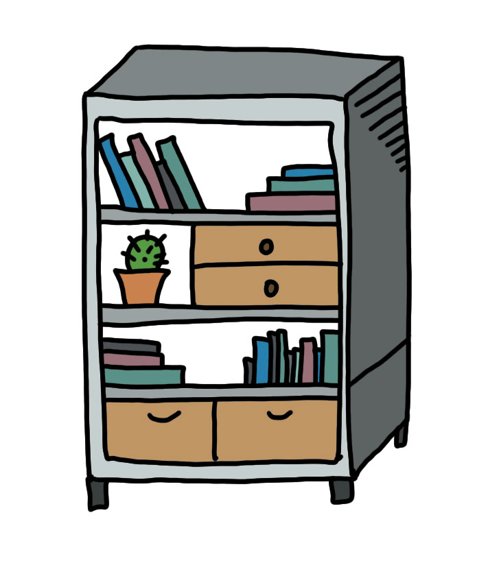

condo = ["room 1", "room 2", "room 3"]
print(condo[0])room 1Reading from Lectionary, Malachi 3:1-4
Some of them are:
int, float, complexbool (True and False)list, tuple, str, range, bytes, and othersdictset, frozensetIt is always useful to consult documentation on each to see what you can and can’t do with them.

[]For example, a Python list:
Notice that if we try to “subscript” an object which is not subscriptable, we get an error:
room 1
room 2
room 3dict):[];type(print) or type(math.cos))
print("hi")Testing some syntax…
| Type | Container | Subscriptable | Ordered (sequence) | Mutable |
|---|---|---|---|---|
| Numbers and booleans | No | No | No | No |
| Lists | Yes | Yes (integers) | Yes | Yes |
| Tuples | Yes | Yes (integers) | Yes | No |
| Strings | Yes (only characters) | Yes (integers) | Yes | No |
| Dictionaries | Yes | Yes (immutable objects) | No | Yes |
| Sets | Yes (only immutable objects) | No | No | Yes |
For example, to find the index of an element of a list:
index of the word 'not' is 2Remember: sequences are ordered and subscriptable with integers (the indexes). The methods below thus work for all of these types: lists, tuples and strings.
| Operation | Result |
|---|---|
| x in s | True if an item of s is equal to x, else False |
| x not in s | False if an item of s is equal to x, else True |
| s + t | the concatenation of s and t |
| s * n or n * s | equivalent to adding s to itself n times |
| s[i] | ith item of s, origin 0 |
| s[i:j] | slice of s from i to j |
| s[i:j:k] | slice of s from i to j with step k |
| len(s) | length of s |
| min(s) | smallest item of s |
| max(s) | largest item of s |
| s.index(x[, i[, j]]) | index of the first occurrence of x in s (at or after index i and before index j) |
| s.count(x) | total number of occurrences of x in s |
All sequence types can also be unpacked in multiple variables. For example:
But careful: you will get an error if you don’t match the length:
Mutable sequences, represented as values separated with commas and enclosed with square brackets [].
x = []When dealing with mutable objects, it is very important to check if an operation is changing the object or making a copy of it.
For example:
What happened here? Wasn’t b supposed to remain [1,2,3]?
a and b are pointing to the same object (the list [1,2,3]). If we change something in a, we change in b and vice-versa.
You can check that with the function id(), which finds an unique integer identifier for each object.
It is different if we make a copy of the object.
What data structure would you use to represent the following? Write down and discuss with your colleagues.
The first names of all the students in this course
An address book entry (name, email, major, …)
A person’s ethnicity
A coordinate point, e.g., (0, 0)
The atomic number of every element in the periodic table
A bag with different colored pieces to be drawn randomly? (For example, in a game like [The Quacks of Quedlinburg](https://boardgamegeek.com/boardgame/244521/quacks-quedlinburg)
Every representation is a selective portrait of a reality according to certain interests of who represents it. You can depict only certain parts, at certain moments, and with a certain structure.
Thus, we can ask: are we encoding reality correctly?
Remember our data types characteristics:
Programmers are encoders. Everytime we represent some thing with a data structure, we are supposing that this thing is correctly portrayed with this structure.
For example, is a list of people’s name something we can “order”? And for what purpose are we doing that?
For example, can emotion be represented with a number? A boolean value? A dictionary indicating multiple aspects of an emotion?
Thus, we also need to acknowledge that data can be:
imprecise (including: what it can mean for someone may not mean the same thing for another);
ambiguous (may mean multiple things depending on the context);
not comprehensive enough (or what we call biased - it is limited to some specific population or situation and thus is not generalizable);
distorted (“artifacts” - we cannot always be sure it is being transmitted or recorded faithfully);
or even not timely enough (things changed since we got them).
This happens because we limited, situated and always see things from our perspective. This is not bad, however, we need to acknowledge this limitedness. We are not possessors of an all-encompassing truth.
“Through the confusion of tongues, through non-communication, God prevents man from constructing [for himself] a truth valid for all men. In this way, man’s truth will always be partial and contestable” (Jacques Ellul, The Meaning of the City, p. 19).
Remember the origin of the word code: a corpus of law;
When we encode things, we are setting a rule;
Thus, we are reflecting our kingly vocation as human beings;
The Bible talks a lot about JUSTICE as the virtue of a king.
To encode correctly, we need to see correctly. And to see correctly, we need a fundamental orientation of heart towards God and his wisdom.
For the Lord grants wisdom! From his mouth come knowledge and understanding. He grants a treasure of common sense to the honest. He is a shield to those who walk with integrity. He guards the paths of the just and protects those who are faithful to him. Then you will understand what is right, just, and fair, and you will find the right way to go. Proverbs 2.6-10